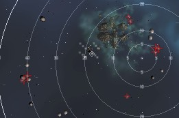
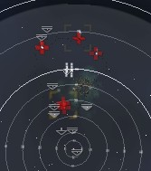

Cargo Delivery, level 4
Last edited by TechReviewsAndHelp
Fri, 19 Apr 2013 01:59 UTC
Fri, 19 Apr 2013 01:59 UTC
Faction: Blood Raiders
Mission Type: Encounter
Space type: Deadspace without a gate, MWDs are working!
Damage Dealt: Em, Thermal. Kinetic missiles from the battleships.
Extras: Heavy nos by Corpus Archbishops and Corpus Harbingers
Scramblers: Elder Corpii Upholder, Elder Corpii Diviner x2
Recommended damage dealing: EM/Thermal
Recommended ship classes: Battleship, Command Ship, Battlecruiser, HAC, Recon, Faction Cruiser (Blitz: any fast & tanked destroyer, frigate or shuttle)
Video: http://youtu.be/8bATnGL46fI
The task is to "deliver" 10 units of Quafe Ultra to your agent. You arrive 40 km away from the warehouse that contains the mission item. The mission completion trigger is looting that warehouse for said Quafe Ultra, once Quafe Ultra is looted, a first spawn will appear, potentially scrambling you but without a great deal of dps. A second group can be triggered by killing the destroyer (Corpior Friar). There is no need to trigger the second group. Beware that the second group has up to 6 cap-draining battleships, so if you intend to fight be prepared and warp out before you get capped out (as always, beware scramblers).
Single Pocket
Group 1 (appears when the Missionloot was taken from the Warehouse.)
8 ships total in combination of:2-3x Battlecruisers (Corpior Exorcists/Phantoms)
2-3x Elite Cruisers (Elder Corpum Dark Priests/Shadow Sages)
1-2x Elite Destroyers (Elder Corpii Friar/Herald) (Warp/Scramble)
1-2x Destroyers (Corpior Friar/Cleric) (Trigger)

Spawn 1
4-6x Battleships (Corpus Archbishop/Harbinger) (NOS within 25km range, 25% chance, 350 units1x Battleship (Corpus Pope aka. Kubi Gayar)
1x Cruiser (Corpum Dark Priest/Arch sage)
2x Battlecruiser (Corpior Phantom/Exorcist)
2-3x Elite Frigs (Elder Corpii Raider/Reaver/Engraver) (Web/Scramble)
The group of Corpus Archbishops/Harbingers will empty your cap very quickly once they are in range.

Tip
- Mission is flagged completed after you have picked up the goods from the objective (Warehouse).
- Microwarpdrives work and a single cycle will easily get a frigate close enough to the Warehouse.
- Don't forget to pickup the goods from the Warehouse, unless you are using Method 1 (see below).
- If you can get outside their effective gun range (about 40 km) you can easily snipe them safely.
Blitz
The spawn doesn't appear to happen until you actually take the Quafe from the Warehouse. Still easily done in a shuttle. Drop the item in cargo and warp out.- Method 1 (Safest - Do not pick up goods and buy From Market instead)
- Buy the needed goods (Quafe Ultra) on the market.
- Put the Quafe in the hangar of station where the mission agent is located, then accept the mission.
- Warp to mission and fly towards Warehouse until Group 1 spawns.
- Warp out and you can complete the mission.
- Method 2 (Pick up with a fast Ship)
- Warp to the mission in a shuttle or very fast (super tanked) frigate with a MWD. An assault frigate is ideal for this.
- Open your cargo hold and approach the warehouse at full speed.
- Be ready to open the warehouse and drag the item to your cargo hold. Quickly warp out.
- Method 3 (Pick up with a cloaked Ship)
- Equip a cloaking device, preferably on a fast ship such as a frigate (for the speed drawback).
- Warp to the site, and when your about 25km out, turn on your Cloak.
- Turtle your way to the hanger and you'll decloak at about 3-4km from it, giving you enough time to make it the rest of the way and warp out without being targeted.
Video
There is many ways to do this mission, but this video shows 2 of them.http://youtu.be/8bATnGL46fI
CategoryMissions
CategoryLevel4
Nothing, including the web/scramble frigs, seems to go faster than 350m/s here, so keeping range was no problem.
I can warp in grab the Quafe and sit and tank the lot reasonably well with my Domi:
3 x 250mm II, 3 x heavy nos (I use E500s)
1 AB (hate the initial trek), 4 x Cap recharger II
1 True Sansha LAR, 2 x EM II, 2 x Therm II, 1 x Kin II, 1 x CPR II
The cap is stable when you have the nos running, so you can let the tank run while your drones do their stuff. If I could bear the wait and leave the AB off, I'd prob be using 425s or 350s to boost the damage, but there's not a huge amount of grid available.
428.78hp/s (EM: 54.19%, Expl: 0%, Kin: 0%, Therm: 45.81%)
Second spawn:
Total DPS: 2,245.25hp/s (EM: 407.54hp/s, Expl: 0hp/s, Kin: 1,500hp/s, Therm: 337.71hp/s)
Percentages: 2,245.25hp/s (EM: 18.15%, Expl: 0%, Kin: 66.81%, Therm: 15.04%)
Second spawn, alternate:
Total DPS: 3,048.75hp/s (EM: 521.50hp/s, Expl: 0hp/s, Kin: 2,100hp/s, Therm: 427.25hp/s)
Percentages: 3,048.75hp/s (EM: 17.11%, Expl: 0%, Kin: 68.88%, Therm: 14.01%)
Fit: highs: whatever fits, lows: 4 extender II, one mag amp II, lows: 5x beta shield power relays, rigs: 2x core defense purgers,d rones: hobgoblin II, garde II's
mission marked complete directly after warp in (blitz)
1x raven
1x mael
picked spot after killing 1st wave and aligned to it. then hit trigger shipped. spawned on top of raven [not my tank boat] so had to move him out as quick as possible out of nos range. manged to kill all, but had to take sb off and do manually on mael as ships got in range and i have only have average top speed of 111 [no ab etc]
as peeps have said if u keep out of range then no real problem. ships seem to have good tank as took a while to die [maybe just my skills crap]
Just did this in an Incursus.............. Didn't do anything....... Warped in right ontop of the objective, looted and warped out.. 0% damage.
Can anyone confirm that I'm not just lucky and that this mission is bugged or has a bugged variable for certain system Jump-In-Points?
But this second time now I'm 37k from the warehouse.
Pocket 1: Flew away from them in my T2 fitted Rokh. Read the guide (normal difficulty). It takes a while to bring them down with hybrids, and they hit kind a hard close up.
Destroyed all the aux power arrays beforehand, just in case. Kited directly away from the warehouse upon spawning first wave. Got swarmed, cleaned them up, pulled trigger ship - by that time I was 50km from where second ambush appeared. The BSes moved faster than me but all seemed to slow down upon getting within 26km (possibly I kited to the max). Destroyed everything without much fuss, before anything could neut or web me.
Came back in a salvage boat for Quafe and loot. Whole mission including salvage was less than an hour's work. Could have gone quicker if I hadn't been paranoid about cap&tank while fitting. Just kite away from the warehouse if you want to take everyone on.
Bounties: 6.3 million
Loot + salvage: maybe 1.5-2 million, 6 armour plates comprised most of that.
Reward: 650k inc. bonus
I had to warp out, mainly because I ignored the advice about energy neuts. After warping back in I'd let my tank (maelstrom) get to about half shields to let cap regen then turn on the shield repper til shields were nearly fixed. Since there are no spawns, my 2nd battleship (maelstrom) was able to go in and hammer on the neutralizing battleship npcs up close.
BEWARE OF THE NEUTS!
Throwing out 10 charges of cap booster 800s i only got 6 cycles of my XL shield booster, needless to say my scrammed AC-Mael died shortly afterwards.
Did it with a Maelstrom. 4x1200 and 4x1400 Artillery. Killed first group, bookmarked, killed some until my cap got low, warped out and back in at 100k, killed all NOS ships before they got close.
Loot: 0.9 M rewards, 0.3 M Modules, 5.1 M Salvage, 6.8 M Bounty = 13.1 M Isk
I didn't get the second spawn as I neared the Warehouse. I only got the first spawn. I killed all the first spawn except the Corpior Cleric. I picked up the stuff from the Warehouse and warped off to eat dinner. Came back later and killed the Corpior Cleric and got the larger second spawn. Popped all the Bs's from the warp-in beacon location before they could get close enough to NOS. Easy mission.
Loot and salvage is very bad not worth doing it
Bounty: 7 076 813 ISK
Loot: 2 600 000 ISK*
Salvage: 3 750 000 ISK*
*Prices from cargohold info.
Looting the can spawned the RATs. Warped off before anyone targeted me and took no damage.
I then changed ships to a Dominix Dual LAR with EM and Thermic Hardeners. I never used the 2nd LAR.
Upon warp-in reverse direction and fly away from the central warehouse. Set drones on the RATs. I left the destroyers till last so as to prevent the spawn from happening too early. By the time the spawn happened I was 60 KM from spawned vessels. I never got scrambled or cap drained. They never got within 40 KM of me so I guess I was outside of their NOS / Scramble range.
DRONES: Take care - the frigates that spawn head straight for your drones and deal damage. Could not take aggro off the drones. Had to withdraw 5 drones so make sure u have spares of your preferred type. I used Acolytes, Infiltrators and Praetors.